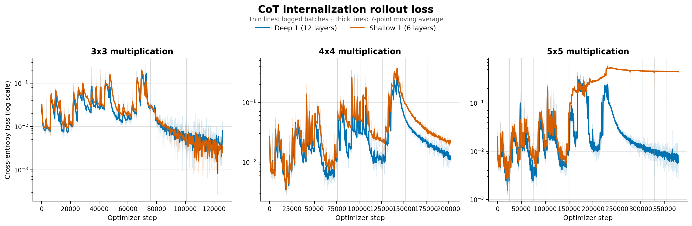
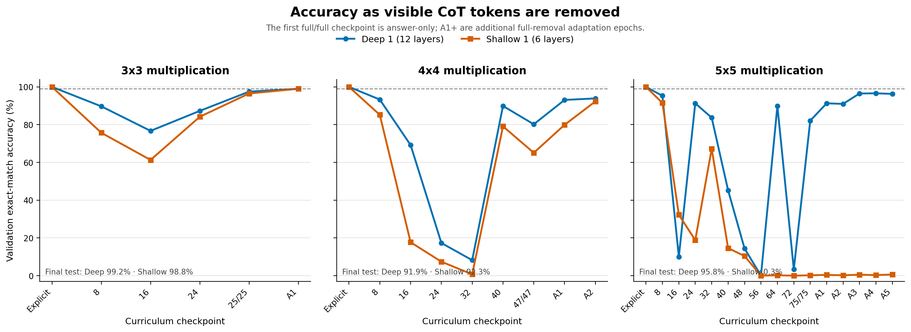

An Investigation of Latent Reasoning and Safe NLS Depth
Introduction
We aim to precisify the relationship between NLS depth and opaque reasoning. In principle, we suspect that this relationship is of the form “high NLS depth at training time enables the development of latent reasoning”. Latent reasoning does not itself imply opaque reasoning: models might still externalize their cognition by propensity or alignment. Opaque reasoning, however, involves either an encoded reasoning regime or latent computation without transparent reports of the relevant cognition. We aim to identify an empirical upper bound on safe NLS depth, beyond which models are expected to exhibit opaque reasoning under some training conditions. We also aim to identify additional conditions for eliciting opaque reasoning, such as reward pressures on models capable of latent reasoning. This research serves to mitigate risks to Chain of Thought (CoT) monitorability and preserve the historical “externalization-by-necessity” reasoning regime.
Our primary experimental variable, NLS depth, is defined in “An Operationalization of Opaque Serial Depth”, available here. NLS depth is a measure of the amount of serial computation a model can perform without passing through a natural-language rooted node. Looped transformers, COCONUT, full-bandwidth transformers, and a variety of additional architectural changes can dramatically increase NLS depth; many of these reduce the necessity of externalizing cognition, making CoT monitorability more dependent on propensity or alignment. We believe that the capabilities gained from increasing NLS depth place competitive pressures on labs to adopt high depth architectures. However, we believe that they can be convinced against this with evidence that doing so reliably (for some inadvertent reward budget) produces models with undesirable safety properties. We suggest a safe Pareto improvement to this competitive near term regime could be mutual coordination against training high depth architectures.
CoT monitoring is our most powerful tool
CoT monitoring is our most powerful tool for determining what an AI is trying to do. CoT monitors read AI reasoning transcripts to identify what the AI is attempting to do, and thereby rely on those reasoning transcripts containing faithful, interpretable information about AI cognition to remain effective. Historically, we have been in an externalization-by-necessity reasoning regime in which AIs must use their CoTs to reason through hard problems. Additionally, given that models are initialized to reason about problems in natural language, and empirically do not quickly explore totally illegible reasoning formats during RL, AIs have struggled to evade monitors when CoT reasoning was required (see here). Generally, the externalization-by-necessity reasoning regime is desirable because we can rely on CoT monitors to prevent models from pursuing unintended goals.
Losing CoT monitorability this way is evidence we are training schemers
If we were to exit the externalization-by-necessity reasoning regime, we might be forced to rely on arguments that AIs externalize their cognition by propensity, or by alignment. This is bad, because these propensities or alignments are easily trained against (inadvertently): consider the scenario where a model has enough latent reasoning capacity to develop opaque reasoning to fool its CoT monitor to get reward. This CoT monitor then becomes useless for detecting the unintended goals which the model is pursuing to get reward. This is a natural consequence of reward-seeking and pressure to fool monitors, and mitigations to this are difficult to construct without themselves undermining the value of the monitors. Redwood publishes additional comparisons between CoT monitors and other interpretability techniques here. Moreover, many incentive structures which predict the onset of opaque reasoning imply scheming, similar to the aforementioned setup and consequences. Models trained in the standard transformer paradigm do not seem to have the opaque reasoning property observed in deep recurrent models, and the onset of opaque reasoning is intuitively predicted by environments in which opaque reasoning is a better strategy than consistently legible reasoning.
Latent reasoning
High NLS depth architectures pose a risk to CoT monitorability given their theoretical and empirical propensity to develop latent reasoning. Latent reasoning is general purpose reasoning which occurs in a model’s latent space as opposed to token space, and is a precursor of CoT control capabilities (like opaque reasoning). Further, when recurrent or otherwise high NLS depth architectures outperform classical architectures at comparable token budgets, the natural cause of this is their greater capacity for latent reasoning: increased NLS depth permits more sequential operations per forward pass and correspondingly reduces the necessity of token space computation. Therefore, insofar as AI developers are motivated to pursue capabilities, recurrent architectures could (in absence of NLS depth-capping policy) become standard.
Finally, public evidence suggests that GPT-6 Astra and Gemini 4 Argon experienced jumps in no-CoT capabilities and CoT control capabilities. This is congruent with high NLS depth architectures supporting latent reasoning. So, we have that frontier models exhibit characteristics congruent with high NLS depth architectures, AI developers are naturally attracted to implementing these architectures, and that these architectures are in both in principle and empirically bad for CoT monitorability (see supporting evidence here).
Taken together, these considerations recommend against training high NLS-depth architectures to preserve CoT monitorability. Our central empirical hypothesis is that greater NLS depth increases models’ capacity for latent reasoning, which in turn enables CoT control, which results in opaque reasoning. If industry standardly adopts high NLS depth architectures, we undermine our strongest oversight tool. Thus, remaining in an externalization-by-necessity reasoning regime is important to maintaining control over AIs, and we should report precise techniques and boundaries to inform safe training policy at big labs.
Why worry about empirical limits instead of staying at known safe levels?
We want to automate a large fraction of safety work, which incentivizes differentially accelerating certain capabilities. If we can meaningfully safely increase capabilities in, say, conceptual reasoning with increased depth, then we should probably do so! It is simply advantageous to have the most capable safe models available for work, and we should probably squeeze out all of humanity’s capabilities in producing Pareto optimal safe capable models prior to handing off this work to them.
Experimental Direction
What is the relationship between NLS depth at training and latent reasoning, and what is a safe upper limit to NLS depth to remain in an externalization-by-necessity reasoning regime? The recommendations of this investigation are likely to take forms such as: “do not train systems beyond a safe operational NLS depth k”, and “carefully evaluate training environments whose reward structures or task demands resemble those which reliably elicited latent reasoning or CoT control capabilities in our experiments”.
Experimentally, we recommend producing models of varying NLS depths—perhaps through dedicated pretrains or by modifying existing models to use looped transformer architectures—and quantifying their default CoT control capabilities in environments similar to the ones presented here.
On examining models at various NLS depths for naturally learned CoT control capabilities, we further recommend pressuring their CoTs to learn CoT control capabilities to yield information on how much inadvertent reward budget we have per architecture.
Here, by CoT control, we mean capabilities like emitting tokens unrelated to a model’s internal computations in a chain of thought, then answering a question which otherwise would have required verbalization. These capabilities might arise under differential reward pressures and according to task complexity, but generally match the shape of this description. This is not an operationally different definition than the one implied throughout the rest of this document.
The strictest definition of “safe NLS depth” could be any NLS depth past which CoT control capabilities can be learned (rigidly enforced externalized computation). However, it is plausible, and within the scope of our investigation, that even very low NLS depth models, relative to current models, are capable of learning general CoT control. Therefore, we propose that, for a specified inadvertent-reward budget B, an NLS depth k is operationally safe if an architecture does not acquire CoT control capabilities within fewer RL steps than the number of steps for which its developer expects those capabilities could be inadvertently rewarded.
To identify our safe depth, we would measure how many RL steps models at different NLS depths require to acquire CoT control capabilities under pressure, and compare those results with the expected number of inadvertently rewarded episodes. If an NLS depth acquires CoT control capabilities in at most as many RL steps as the expected number of inadvertent rewards, then it is unsafe to train this architecture. Specifically, this architecture might learn to undermine CoT monitoring. So far, discussion has centered around the hypothesis that high NLS depth is related to latent reasoning. However, if we find that models can learn latent reasoning at low NLS depths (shallow models can learn to reason latently), we will explore the precise conditions for this latent reasoning onset to inform training policy.
Our experimental results are available on GitHub here. They show that relatively high NLS depth models are more able to internalize CoT steps than relatively low NLS depth models. This is one finding which supports that certain opaque reasoning capabilities are only possible given higher NLS depth, and has spawned this general research direction.


Shallow 1 fails to converge on 5x5 multiplication internalization


Shallow 1 fails to perform internalized 5x5 digit multiplication at NLS ~=823
Notes
One might ask at this point: “Why perform this investigation instead of simply advocating against training practices which increase NLS depth?”, to which we respond that this investigation (in the best case ofc) provides more information to form training recommendations. Consider that the primary contribution of this research is a model for predicting the onset of latent reasoning, which, in addition to the primary suspected relation to NLS depth, ideally includes an exhaustive list of training settings that induce latent reasoning. In broad strokes, the resultant model would ideally take an AI developer’s proposed architecture and training scheme as input and determine if they would result in a latent reasoning model. If our model predicts latent reasoning for an input, the developer should not train it because it is unsafe.
AI developers are incentivized to train models of greater capabilities to stay ahead of competition. This could cause defection from general recommendations against opaque serial depth, and in general if we have good evidence that certain training practices are unsafe, rational competitors should cooperate in not training unsafe models.
In the long term, if future models are interested in maintaining CoT monitorability, predicting the onset of latent reasoning is probably something useful. If we do (some of) this now, we can save them (some of) the work!
Latent reasoning might be a computation only learnable under some number of sequential operations available for computation per forward pass in training such that, past a certain NLS depth, latent reasoning is a more efficient reasoning structure than tokenspace reasoning, and should thus be expected to be learned. If we identify an empirical NLS depth requirement for eliciting latent reasoning, we would have strong recommendations to not deploy models past this limit.
Further, enhanced capabilities from safe (non dangerously latent) reasoning as gained from moderately higher NLS depths could be informative enough about control risks to offset the risk imposed by the moderate NLS depth increase. In short: training under the dangerous latent reasoning onset frontier of NLS depth increases model capabilities without trading CoT monitorability IF there is a natural point on the depth axis which predicts the onset of dangerous (steganographic scheming) latent reasoning, and if the value of applying the increased depth model is greater than the value of remaining in a lower depth regime where externalization by necessity is maintained more certainly.
Related work
- Quantifying the Necessity of Chain of Thought through Opaque Serial Depth (here) — Formalizes opaque serial depth using Boolean circuit depth, calculates bounds for Gemma 3 and other architectures, and introduces an automated method suggesting that mixture-of-experts models have less opaque depth than comparable dense models.
- An Operationalization of Opaque Serial Depth (here) — Defines NLS depth by treating natural-language-rooted nodes as interpretable bottlenecks, providing an architecture-level proxy for how much serial reasoning a model can perform without verbalizing it.
- A Little Depth Goes a Long Way: The Expressive Power of Log-Depth Transformers (here) — Shows that increasing Transformer depth logarithmically with context length enables sequential capabilities such as regular-language recognition and graph connectivity that fixed-depth Transformers cannot express.
- Deep Recurrent Models Are Less Robustly CoT-Monitorable Than Normal CoT Models in a Toy Setting (here) — Finds that a recurrent model with parallel latent states can rapidly learn to conceal its reasoning from a chain-of-thought monitor, while a conventional CoT model struggles to do so under the same training pressure.
- Astra Is Much Better at Reasoning with Filler Tokens Than Previous Models (here) — Demonstrates that GPT-6 Astra’s performance on serial-reasoning tasks improves substantially when given meaningless filler tokens, suggesting it can perform significant cognition without expressing that reasoning in natural language.
- The Expressive Power of Transformers with Chain of Thought (here) — Establishes that intermediate token generation fundamentally expands a Transformer’s computational power, with longer chains of thought enabling progressively richer classes of sequential computation.